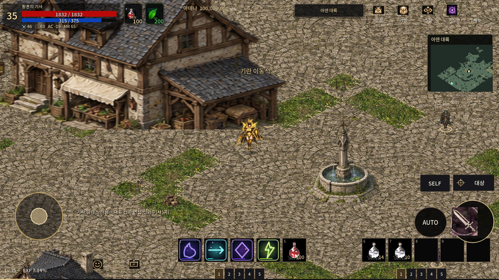

붉은 표시는 원 게시물에 포함된 표시. 원작 화면은 원 권리자 소유이며 게임 리소스로 사용하지 않는다.

A3 local cell [981,740], camera offset [0,-32], Linux software OpenGL
외형 동일성: FAIL · 원작 카메라 정확한 정합: NOT_RUN · Android 실기기: NOT_RUN
두 패널의 출력 비율을 16:9로 맞췄다. 원작 화면은 비율을 유지하며 여백을 넣었다. 원작 월드 좌표와 줌이 없으므로 정확한 동일 카메라 검사를 통과한 자료가 아니다.

건물·도로·장식 비교 및 원작/PC 차이 · 검증 범위와 미완료 · 실행·카메라 기록
원작의 작은 건물 배열·꽃과 화단 경계·중앙 구조물 문양, 현재 후보의 큰 상점·반복 포장·식재·캐릭터 비율은 차이가 남는다. 사용자 승인 전 다른 지역 제작과 main 병합은 진행하지 않는다.